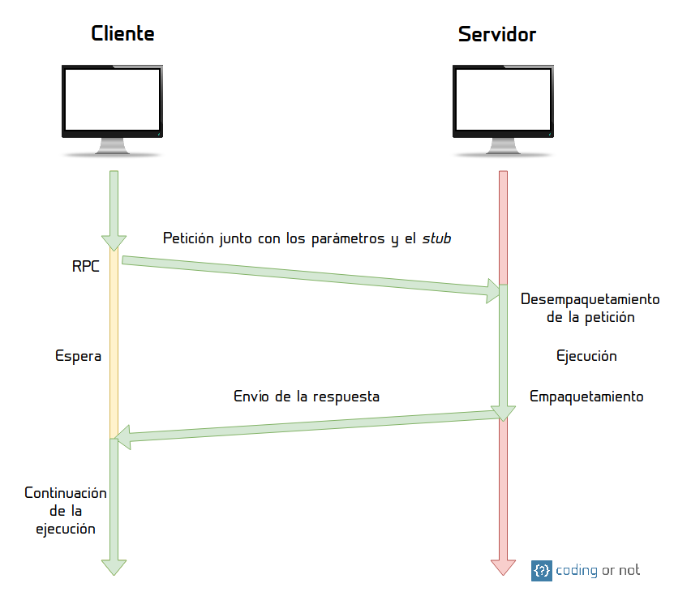

RPC y RMI; TCP /IP
27 de Mayo del 2020
TCP/IP
El protocolo TCP/IP es un conjunto de protocolos de red en los que se basa Internet y que permiten la transmisión de datos entre redes de computadoras.
Las siglas TCP/IP hacen referencia a este grupo de protocolos:
TCP
Es el Protocolo de Control de Transmisión que permite establecer una conexión y el intercambio de datos entre dos anfitriones. Este protocolo proporciona un transporte fiable de datos.IP
Protocolo de internet, utiliza direcciones series de cuatro octetos con formato de punto decimal (como por ejemplo 75.4.160.25). Este protocolo lleva los datos a otras máquinas de la red.
Capas del modelo TCP/IP
Nivel de enlace o acceso a la red
Es la primera capa y ofrece la posibilidad de acceso físico a la red (que bien puede ser en anillo, ethernet, etc.), especificando el modo en que los datos deben enrutarse independientemente del tipo de red utilizado.
Nivel de red o Internet
Proporciona el paquete de datos o datagramas (paquetes de datos con el mínimo de información en una red) y administra las direcciones IP.
Nivel de Transporte
Permite conocer el estado de la transmisión así como los datos de enrutamiento y utilizan los puertos para asociar un tipo de aplicación con un tipo de dato.
Nivel de Aplicación
Esta es la capa más cercana al usuario, y la que define los protocolos que usarán las aplicaciones que proporcionan servicios al usuario.
Movimiento de la información
Esta figura muestra el flujo de información de las capas de protocolo TCP/IP del remitente al host.
Esta figura muestra el flujo de información de las capas de protocolo TCP/IP desde el sistema principal al remitente.
Esta figura muestra los datos que fluyen en ambas direcciones a través de las capas TCP/IP.
Ventajas
- Es el protocolo estándar que se utiliza a nivel mundial para conectarse a internet y a los servidores web.
- TCP/IP es adecuado tanto para grandes y medianas redes como para redes empresariales o domésticas.
- TCP es el protocolo que se utiliza en prácticamente todas las redes del mundo, aportando fiabilidad en los datos al ser orientado a conexión.
- Es compatible con el modelo OSI en sus funciones, y no tiene tantas actividades redundantes al unir las tres capas de aplicación en una sola.
Desventajas
- No distingue bien entre interfaces, protocolos y servicios lo cual afecta al desarrollo de nuevas tecnologías basadas en TCP/IP-
- Cuando se utiliza en servidores de ficheros o servidores de impresión no ofrecen un gran rendimiento.
- En redes con un volumen bajo de tráfico tiende a ser más lento por tener menos saltos de enrutamiento. Con un mayor número de estos TCP gana mucha ventaja.
- Al tener menos capas es más complejo de configurar y mantener
RPC Y RMI
Son los mecanismos que permiten a un cliente invocar el procedimiento o método desde el servidor mediante el establecimiento de la comunicación entre el cliente y el servidor. La diferencia común entre RPC y RMI es que RPC solo admite programación procesal mientras que RMI admite programación orientada a objetos.
RPC
Llamada a procedimiento remoto (RPC) es una característica del lenguaje de programación diseñada para la informática distribuida y basada en la semántica de procedimiento local llamadas. Es la forma más común de servicio remoto y se diseñó como una forma de abstraer el mecanismo de llamada a procedimiento para usar entre sistemas conectados a través de una red.
Funcionamiento

Primer paso
El cliente hace la llamada al procedimiento remoto mediante un mensaje a través de la red. Este se detiene ya que es un proceso síncrono, es decir, necesita una respuesta del servidor para poder continuar su ejecución. En esta llamada se incluye un stub (o resguardo en español) el cual se encarga de ajustar parámetros y direcciones de memoria de un ambiente (el cliente) a otro (el servidor).
Segundo paso
El servidor recibe la petición y desempaqueta el mensaje para extraer la información necesaria para realizar la tarea. El stub ayuda a que el servidor sea capaz de convertir parámetros de una representación a otra (de ser necesario), para traducir direcciones de memoria de cliente a servidor, etc.
Tercer paso
El servidor ejecuta la tarea.
Cuarto paso
El servidor crea un mensaje de respuesta para el cliente en el que incluye el resultado de la tarea que este le pidió realizar.
Quinto paso
El cliente recibe y desempaqueta el mensaje de respuesta del servidor. Continua con su ejecución normal.
RMI
Invocación de método remoto (RMI) es similar a RPC pero es específico del idioma y una característica de java. Se permite que un hilo llame al método en un objeto remoto. Para mantener la transparencia en el lado del cliente y del servidor, implementa objetos remotos utilizando stubs y esqueletos. El código auxiliar reside en el cliente y para el objeto remoto se comporta como un proxy.
Implementación
- Definir interfaz con los métodos remotos
- Implementar el servidor
- Instanciar el servidor y registrarlo mediante un stub:
- Implementar el cliente que usará el servicio
- Será conocida por cliente y servidor
- El elemento que dará el servicio de la interfaz
- Referencia remota al servidor generada por RMI para el uso
de los clientes.
Java RMI
Implementación
- Interfaz: clase que extiende java.rmi.Remote
- Servidor: clase que implementa la interfaz
- Stub: instancia de la interfaz asociada a un servidor
- Cliente: cualquier clase que localice el stub y use su interfaz
- Puede tener más métodos que los de la interfaz
- Sólo contiene los métodos de la interfaz
- Es la que se registra en RMI
JAVA
Stub: registro
Dos modos de asociar un stub a un registro desde Java:
Mediante java.rmi.registry.Registry
- Registry registro=LocateRegistry.getRegistry();
- registro.rebind(nombre,stub)
Mediante java.rmi.Naming
- Naming.rebind(nombre, stub)
Cliente: búsqueda
Dos modos de buscar el stub de un servicio:
Mediante java.rmi.registry.Registry
- Registry registro=LocateRegistry.getRegistry();
- registro.lookup(nombre);
Mediante java.rmi.Naming
- Naming.lookup(nombre)
Gestor de seguridad
Para activar el gestor:
if (System.getSecurityManager()==null)
-
System.setSecurityManager(new SecurityManager());
Podemos modificar la política de seguridad de Java con un fichero de permisos con líneas como:
- grant{ permission java.security.AllPermission; };